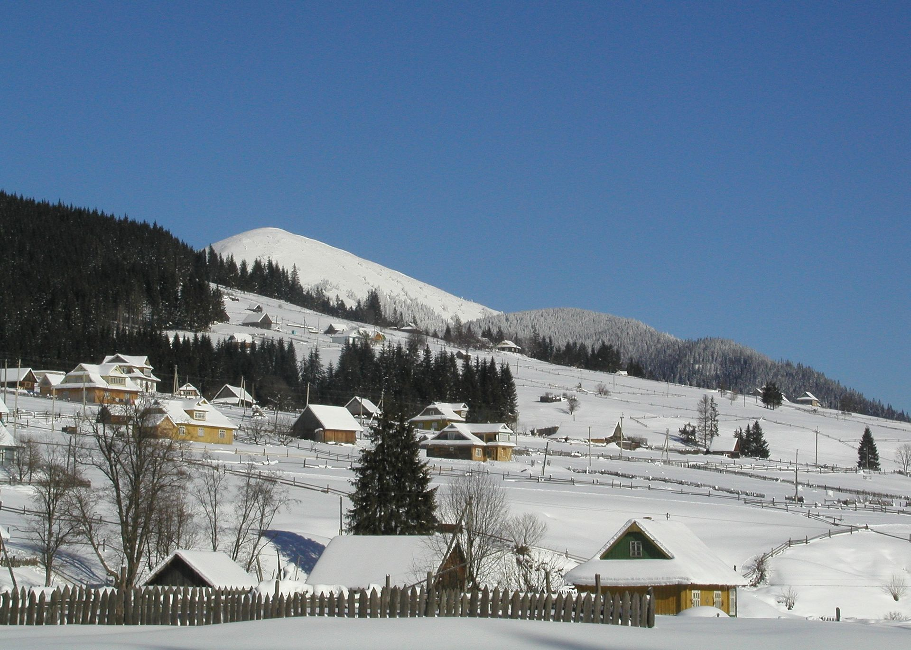

Букове́ль — український гірськолижний курорт біля підніжжя гори Буковель,
неподалік від села Поляниця Яремчанської міської ради, на висоті 900 метрів
над рівнем моря, за 30 км від м. Яремче. Найбільший і найсучасніший гірськолижний
курорт в Україні.Компанія «Скорзонера" зареєстрована в 2000 році на території
Яремчанської сільської ради Івано-Франківської області і в 2001 році почала будівництво
гірськолижного туристичного комплексу «Буковель».
У 2005 році на «Буковелі» було 15 км лижних трас, 5 підйомників (у тому числі один малий).
У 2004 році комплекс прийняв 180 тис. відпочиваючих
Курорт активно розвивається, більша частина існуючих споруд, доріг і
трас зведена в 2005-2011 роках. В останні роки активно розвивалася саме
інфраструктура, а не витяги і траси. Були побудовані 2 багатоповерхових
паркінги, додаткова дорога Яблуниця-Буковель (приводить на паркінг біля
нижньої станції 5-го підйомника), розширені готельні комплекси на
території курорту.Буковель спочатку був спроектований як лижний курорт
(наявність ядра з одно-двоповерхових готелів, стоянок для авто, точок
громадського харчування) [2]. Від цього ядра по схилах постійно
будуються нові підйомники і траси. З 2008 року Буковель почав р
озвиватися як лікувальний і бальнеологічний центр завдяки наявності
власних джерел мінеральних вод
Інфраструктура
Курорт має рекордну для України кількість витягів, розвинену інфраструктуру: сім власних комфортабельних готельних комплексів «VIP-резиденція», «Едельвейс», «Буковель», «Шелтер», «Іріс», «Тавель», «Radisson Blu». Транспортне сполучення через гірську дорогу. Довжина трас: 51000 м підготовлених трас. 100% обладнано снігонапилюючим устаткуванням. Довжина трас: від 300 до 2300 м. Класифікація трас: сині, червоні, чорні. Перепад висот: від 40 до 285 м.
Переваги курорту а саме підйомників: 16
- 11 — чотирикрісельні
- 1 — двокрісельний (№ 2R)
- 1 — трикрісельний
- 1— бугель (№ 5)
- Мультиліфти: 2
Пропускна здатність всіх витягів становить біля 30000 чол./год.
Одночасно, на схилах може комфортно знаходитись 12000 чол.
Додатково: ратраки, вечірнє катання, хейлітури (від англ. heliski,
heliboarding — катання на лижах чи сноуборді, з застосуванням гелікоптера),
прокат спорядження, школи лижників, ковзанка, прокат снігоходів, велопарк,
електроскутери.
Розташований біля населеного пункту Поляниця.
Найближче велике місто — Яремче.
